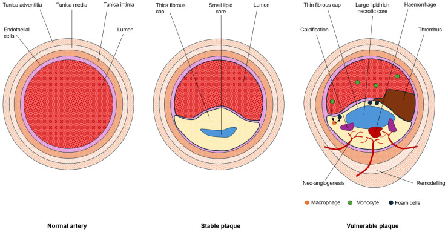
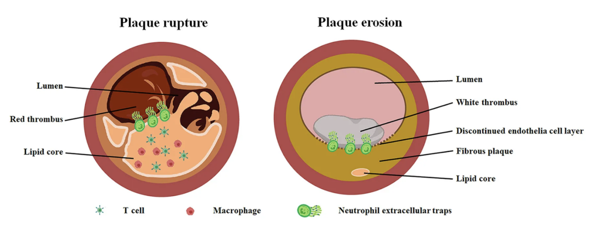

定義與定位
這個病是什麼？在分類樹的哪個位置？跟隔壁的病靠什麼分開？
| 項目 | 重點 |
|---|---|
| 本質 | 冠狀動脈內膜粥狀硬化斑塊 → 管徑狹窄或急性血栓阻塞 → 心肌缺血 |
| 好發族群 | 年齡、男性、抽菸、DM、高血壓、高血脂、早發 CAD 家族史、CKD、慢性發炎疾病 |
| 分類位置 | 缺血性心臟病的主幹；旁邊還有非粥狀硬化的缺血原因（血管痙攣、SCAD、栓塞、微血管病變） |
| 分岔判準 | 斑塊有沒有破裂——沒破 → CCS（勞動時才缺血）；破了 → ACS（休息也缺血） |
名詞地圖：這一節就是為了解決混亂
| 機制 | Troponin | 持續 ST 上升 | 決策後果 | |
|---|---|---|---|---|
| CCS（stable angina） | 固定狹窄，需氧↑ 才缺血 | − | − | 門診：藥物＋危險因子；擇期評估 |
| UA（不穩定心絞痛） | 斑塊破裂＋次全阻塞，休息也缺血 | − | − | 住院抗栓、風險分層後導管 |
| NSTEMI | 同 UA，但已有壞死 | ＋ | − | 與 UA 相同（合稱 NSTE-ACS） |
| STEMI | 斑塊破裂＋完全阻塞 → 全層缺血 | ＋ | ＋ | 立刻再灌流（見 ACS） |
心肌梗塞的五個 Type：機制分類，不是嚴重度
| Type | 機制 | 處置方向 |
|---|---|---|
| 1 | 粥狀硬化斑塊破裂／侵蝕 ＋ 血栓 | 抗栓 ＋ 再灌流（＝一般說的「心肌梗塞」） |
| 2 | 供需失衡，無急性斑塊事件：快速心律不整、嚴重貧血、休克／低血壓、敗血症、高血壓危症、血管痙攣 | 治病因，不是 DAPT ＋ 導管 |
| 3 | 疑似缺血症狀／心電圖變化後猝死，來不及驗生化 | — |
| 4a／4b／4c | PCI↗ 相關／支架血栓／支架再狹窄 | 依情境 |
| 5 | CABG 相關 | 依情境 |
病因與機制
為什麼會發生？病生理鏈條長什麼樣？
flowchart TD A["危險因子<br/>內皮功能失調"] --> B["脂質沉積<br/>粥狀斑塊形成"] B --> C["管徑固定狹窄"] B --> D["斑塊不穩定<br/>薄纖維帽、大脂核"] C --> E["需氧↑ 才缺血<br/>CCS"] D --> F["破裂／侵蝕<br/>＋血小板血栓"] F --> G["次全阻塞<br/>UA・NSTEMI"] F --> H["完全阻塞<br/>STEMI"] classDef key fill:#8e0000,stroke:#5f0000,color:#fff,font-weight:bold classDef mid fill:#263238,stroke:#000,color:#fff,font-weight:bold class H key class E,G mid

由左至右：正常血管、穩定斑塊（厚纖維帽、小脂質核心）、易損斑塊（薄帽、大脂質壞死核心、巨噬細胞／泡沫細胞、新生血管與斑塊內出血）。Source: Bezerra et al., J Cardiovasc Dev Dis 2025, Figure 1（CC BY 4.0）。
左圖補上事件端：纖維帽破裂後，thrombogenic lipid core 暴露，迅速形成富紅血球血栓；血栓量決定次全或完全阻塞。右圖是 plaque erosion 對照，常形成較偏 platelet-rich 的白色血栓。Source: Wikimedia Commons — Pathological features of plaque rupture and plaque erosion（CC BY 4.0）。臨床表現
典型病人長什麼樣？哪些症狀是幾乎一定有、哪些是提示性的？
典型心絞痛（typical angina）三要素——三個都符合叫典型，兩個叫非典型，零到一個叫非心絞痛：
- 胸骨後壓迫／緊縮／悶重感（不是尖銳刺痛，通常說不出精確一點）
- 勞動或情緒壓力誘發
- 休息或硝酸鹽數分鐘內緩解
| 分類 | 表現 |
|---|---|
| 典型（CCS） | 上述三要素，症狀在數週至數月內穩定可預測（同樣的運動量誘發同樣程度） |
| 不穩定（→ ACS） | 新發生、休息時發作、頻率／強度／持續時間惡化、比以前更輕的活動就誘發 |
| 提示性（anginal equivalent） | 呼吸困難、冒冷汗、噁心嘔吐、極度疲倦、上腹痛、下巴／牙／頸／肩／背／手臂痛 |
| 少見但重要 | 沉默缺血——DM（自主神經病變）、老年人、女性、CKD、術後、失智者可以完全不痛 |
→ 相關主訴流程：Chest pain↗、Dyspnea（Workup）
診斷
診斷標準是什麼？要開哪些檢查？哪個是 gold standard？
| 步驟 | 內容 |
|---|---|
| ① 排除急性 | 12-lead EKG ＋ hs-cTn。有動態變化或不穩定症狀 → 走 ACS，不要送去壓力測試 |
| ② 估 pretest probability | 年齡、性別、症狀典型度、危險因子。極低機率不需要檢查（假陽性反而害人）；極高機率可直接考慮侵入性 |
| ③ 中等機率 → 非侵入性檢查 | 解剖性：CCTA（可看斑塊負荷，年輕／中低機率者佳）。功能性：運動心電圖、負荷心臟超音波、心肌灌流掃描、負荷 MRI（可定位缺血範圍） |
| ④ 侵入性 | 冠狀動脈導管攝影是解剖 gold standard；中度狹窄用 FFR／iFR 判斷有無生理意義 |
要開的檢查：EKG ischemia、Troponin、Stress test↗、Coronary angiography↗（Test）
鑑別診斷
要跟誰分清楚？靠什麼分？
| 要排除的 | 支持它的線索 | 怎麼排除 |
|---|---|---|
| Aortic dissection | 撕裂樣痛、瞬間到最痛、延伸到背、兩側血壓／脈搏不對稱、新的舒張期雜音 | CTA。這是抗栓治療的絕對禁忌情境 |
| Pulmonary embolism | 呼吸困難為主、低血氧、單側下肢腫、心搏過速、右心負荷 | D-dimer／CTA |
| Pericarditis↗ | 尖銳痛、姿勢與呼吸相關（躺下加劇、前傾緩解）、摩擦音、廣泛凹型 ST 上升＋PR 段下降 | 見 EKG ischemia 的 mimics 表 |
| 血管痙攣性心絞痛（Prinzmetal） | 休息時、清晨發作，痛時可見暫時性 ST 上升，冠脈通暢；抽菸相關 | 痛時 EKG；CCB 反應好。禁忌：單獨用 beta blocker |
| SCAD（自發性冠脈剝離） | 年輕女性、產後、纖維肌肉發育不良、無傳統危險因子 | 導管；多數不放支架，保守治療 |
| HCM／Aortic stenosis↗ | 收縮期雜音、暈厥、勞動性症狀但冠脈可能正常 | 心臟超音波 |
| 胃食道逆流／食道痙攣 | 進食相關、平躺加劇、灼熱感 | 不能用「制酸劑有效」排除 ACS |
| 肌肉骨骼／肋間神經 | 可觸痛重現、與呼吸／動作相關 | 病史與 PE，但仍不可據此跳過 EKG |
治療
第一線是什麼？什麼情況升級？
| 情境 | 處置 |
|---|---|
| 改善預後（每個人都要） | 高強度 Statin（目標 LDL-C 依風險，通常 <70 mg/dL，極高風險 <55）、低劑量 aspirin、戒菸、血壓控制、DM 病人優先選有心血管益處的藥（SGLT2i／GLP-1 RA）、運動、心臟復健 |
| 緩解症狀第一線 | Beta blocker↗（降心率＝降需氧）或非 DHP-CCB；短效硝酸鹽備用（Nitrates↗） |
| 症狀未控制 | 加第二種抗心肌缺血藥（長效硝酸鹽、DHP-CCB、ranolazine、ivabradine、trimetazidine） |
| 升級到血管重建 | 最佳藥物治療後仍有影響生活的症狀；或高風險解剖（左主幹重度狹窄、三條血管病變合併左心功能下降、大範圍缺血）→ PCI↗ 或 CABG |
| 選 CABG 而非 PCI 的傾向 | 左主幹、複雜三條血管（SYNTAX 分數高）、糖尿病合併多條血管病變、左心功能明顯下降 |
併發症與預後
住院時要盯什麼？出院後會怎麼樣？
- 要盯的併發症：ACS（斑塊破裂事件）、缺血性 Heart failure（缺血性心肌症）、心律不整與 Sudden cardiac death↗、缺血性二尖瓣逆流
- 預後因子：左心室 EF、缺血心肌的範圍、病變血管數與位置（左主幹最差）、DM、CKD、是否持續抽菸、LDL-C 是否達標、有無心臟復健
禁忌與陷阱
相關連結
- ACS — 急性路線：分流、再灌流時間窗、併發症時序
- EKG ischemia — ST 段判讀閾值、梗塞定位、STEMI equivalent／mimics
- Troponin — 0/1h algorithm、心肌損傷 vs 心肌梗塞、非 ACS 升高原因
- Chest pain↗ — 主訴層的 can't-miss 與第一批 order
- PCI↗、Stress test↗、Statin、Antiplatelet、Nitrates↗、Beta blocker↗